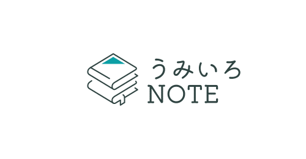

2019年秋から1年間続いた共同マガジンWriters Lab “Code W”に、僕は嬉しいことに参加させてもらっていた。
ともに作り上げていったのが音声小説プラットフォームであるWritoneで出会ったメンバー。それぞれが当時はまだできたばかりだったWritoneで注目を浴びており、その小説に、その詩に、その声に触れるたび「そりゃ注目されるよね」と頷ける個性を共同マガジンでも遺憾なく発揮していた。
↓メンバーのWritoneページ
僕のように独りで創作を続けてきた人間にとって、誰かと一緒に何かを形にしていく過程はたまらなく刺激的だった。幸せな時間は過去になって初めて、その大切さを知ることができるなぁとついつい感慨にふけってしまう。
そんな共同マガジンで連載させてもらっていたエッセイ「うみいろノート」。
初回投稿がちょうど2年前の今日。あれから2年が経ち、世間様も、個人的な身の回りも目まぐるしく過ぎ去っていった。
https://note.com/embed/notes/n2cfd59489aae
気づけばあっという間のことだ。仕事に追われ、生活に追われ、やはりこれも気づかないうちに元々ひ弱な僕の書く力もどんどん落ちていった。
「また書き始めようか」
そう思うのは秋の夜に思うことが多い。夏生まれだけど、あまり夏が好きでない僕がほっと一息つける秋に、不思議と体のうちからやる気がみなぎってくる。そんな季節に僕は感謝してもしきれない。
キネマの神様。
映画は観る専門だから映画監督になろうと思ったことはないけれど、キネマの神様が気まぐれにひょっこり顔を出して「仮にも創作者の端くれなら、誰が見てなくても続けなさい」とちっぽけな僕を励ましてくれたことも、この「うみいろNOTE」を始めるきっかけになった。
原作は原田マハの小説。かつて映画製作に情熱を燃やしていたゴウ(演:沢田研二)は、今ではギャンブル依存症のダメ親父。家族にも見放されたゴウが向かったのは古めかしい映画館「テアトル銀幕」だった。そこの館主であり、かつてともに映画を作っていたテラシン(演:小林稔侍)からリバイバル上映予定の映画のフィルムチェックを頼まれる。作中のヒロイン、桂園子(演:北川景子)が映し出されると、ゴウは「あの瞳には自分が映っているのだ」と熱を持って語り出す。
当初は昨年逝去した志村けんと、ゴウの青年時代を演じる菅田将暉のW主演の予定だった。
撮影が行われた2020年は世界中がパンデミックで苦しめられていた。その影響は大きく、本作も長期の撮影中断を余儀なくされた。しかし、監督の山田洋次は諦めていなかった。
「無事に(撮影が)終わればいいってわけじゃないんだ。いいものを僕たちは作り上げなきゃいけないんだ。もの凄いエネルギーをかき立てて素敵な作品を作りたいと僕は思っていますから」(引用: https://www.youtube.com/watch?v=rCEuNS677no)
その言葉には亡き主演への想いを胸に、何があっても本作を作り上げようとする監督の気概を感じた。「男はつらいよ」シリーズでも有名な映画界の巨匠が、今でも飽くなき探求心を持ち続けていることに敬服するとともに、その姿勢はすべての創作者に勇気を与えてくれると思う。
志村の遺志を受け継いで本作に臨んだのは監督だけではない。志村の代役を務めた沢田研二もそのうちの一人だ。
二人はかつて同じ事務所の先輩後輩であり、テレビや舞台、ラジオで共演を重ねてきた。そんな二人の関係を知っていた監督が沢田に代役をオファー。10年以上も役者業から離れていた沢田だったが「志村さんのためなら」と快諾したという。二人の友情は、作中で映画製作に明け暮れるゴウとテラシンの絆のようで、観ているこちらの心までじんわり温めてくれる。
情熱を傾けて夢中になったものへの憧れ。ゴールのない道のりだからこそ、どこまでも追い求められる。
かつてのゴウのように、そして情熱を取り戻した今のゴウみたいに。夢中になってのめり込んだ憧れをいつまでも胸に、これから走り続けていきたい。(人名敬称略)
https://www.youtube.com/embed/rjge_lrdWpQ?rel=0